2.1. Introduction¶
INTRODUCTION TO BE DONE HERE
1. Simulation¶
a) Simulation definition¶
Simulation is one of the most effective decision support tools available to scientists, designers and managers of complex systems. It consists in building a model of a real system and conducting experiments on this model in order to understand the behavior of this system and improve its performance. Here is one of the definitions of a simulation:
“The process of designing a model of a real system and conducting experiments with this model for the purpose either of understanding the behaviour of the system or of evaluating various strategies (within the limits imposed by a criterion or a set of criteria) for the operation of the system.” Shannon, 1998.
The issue behind a digital simulation is therefore to study a real system in order to understand its internal functioning and / or to predict its evolution under certain conditions. Moreover, to achieve these objectives, this study is necessarily done through a model of the real system which is used to carry out the experiments. The terms real system and model are the two keywords in this definition.
It is important to understand that the real system does not necessarily refer to a phenomenon that exists in nature. It can also be an intellectual construction of a virtual phenomenon. This denomination is in fact used to clearly distinguish the phenomenon to be studied from its model which is also considered as a system.
Shannon adds that a simulation process is constituted by the construction of the model and by the analytical use which is made of the model to study the system.
b) Computeur simulation definition¶
Computer simulation is in fact inseparable from the experimental process which is linked to its objective.
“Computer simulation is the discipline of designing a model of an actual or theoretical physical system, executing the model on a digital computer, and analyzing the execution output.” Fishwick, 1997.
This definition gives a global overview of a process of a computer simulation process. Fishwick defines this discipline as an iterative and nonlinear process composed of three interdependent fundamental tasks:
The development of the model.
Running the model on a computer.
Analysis the execution of the model and the obtained results.
This definition clearly shows the importance of the model and its development for the design of a simulation.
c) Simulation as an experimental process¶
Most of the time, Fishwick’s definition is sufficient to illustrate clearly and simply the different stages that constitute the development of a computer simulation. However, it may be interesting to detail these steps:
Definition of the problem: clearly define the objectives of the study. What are the questions we want to answer?
Definition of the system: determine which parts of the system to study. The model will then be developed according to the objectives set.
Definition of the model: develop a first model graphically or in pseudo code. This involves defining the different entities that belong to the system: components, variables, interaction between components, etc.
Preliminary analysis of the experiment: determine what the criteria are which will make it possible to assess the quality of the experiment: what are the parameters to vary, with what amplitude and over how many runs? How experience will be needed for the whole experiment?
Definition of initial parameters: determine and collect the data that are necessary for the development of the initial values that will be used for the configuration of the model.
Implementation of the model: convert the developed model into a simulation language to allow its implementation on a computer.
Verification and validation of the model: check that the simulator correctly execute the model to validate the results obtained by it. Are they acceptable and representative of the system being want to study?
Experimentation: run the actual simulation to recover desired results and perform a sensitivity analysis of the model taccording to the initial parameters.
Interpretation of the results: conclude on the model from the results obtained.
This more complete description provides a better idea of what a computer simulation is and the different challenges to be overcome. It also introduces the validation and verification steps in a simulation: these two steps are fundamental and cannot be dissociated from the experimental process (even more in the context of a computer simulation).
d) Dynamic systems¶
Now that we have an idea of what a computer simulation is, it is worth presenting the different concepts that are manipulated to model real systems. In this context, the notion of dynamic system is essential. By dynamic system we mean:
“Any formal construct which provides general modeling concepts for various kind of disciplines.” Rozenblit & Zeigler, 1993.
Most models used to represent a dynamic system are based on the abstractions offered by the systems theory.
The basic principle of this theory is to consider that a system can be specified according to two fundamental aspects:
The behavior of the system at its limits (external behavior): the observable reactions of the system from outside it;
The internal structure of the system: its internal state and its intrinsic functioning (its dynamics).
Thus, at the highest level of abstraction, a dynamic system is seen as a black box which has an input, an output and an internal structure as shown in the following figure:
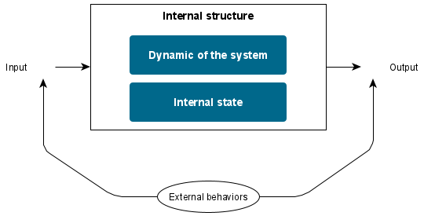The external behavior of the system is defined by the relationship between the history of inputs and the history of observed output results. In other words, it characterizes how the system reacts from the observer’s point of view at the input / output level (I/O).
The internal structure of the system is defined according to three parameters:
The system state which is generally represented by one or more variables called state variables.
The system state change mechanism, which refers to how state variables change based on inputs or on their own. This aspect of system dynamics is modeled by what is generally referred to as the state transition function.
The production mechanism of the system which refers to how the system produces an output result based on its internal state. This is called the system output function.
Generally, the last two points are implicitly grouped together when talking about the dynamics of the system which concerns the mechanisms of evolution of the system over time, as opposed to the state of the system which refers to the situation in which the system is at a specific time step.
The important point to remember here is the distinction that systems theory makes between the different aspects of a dynamic system: behavior and internal structure.
e) The different temporal models used for the representation of dynamic systems¶
A dynamic system is defined by how it evolves over time. So, one of the most important features of a model which represent a dynamic system is how time is represented.
There are three types of time representations:
Continuous time models: in a finite time interval, the system state variables change in value infinitely often, ie continuously.
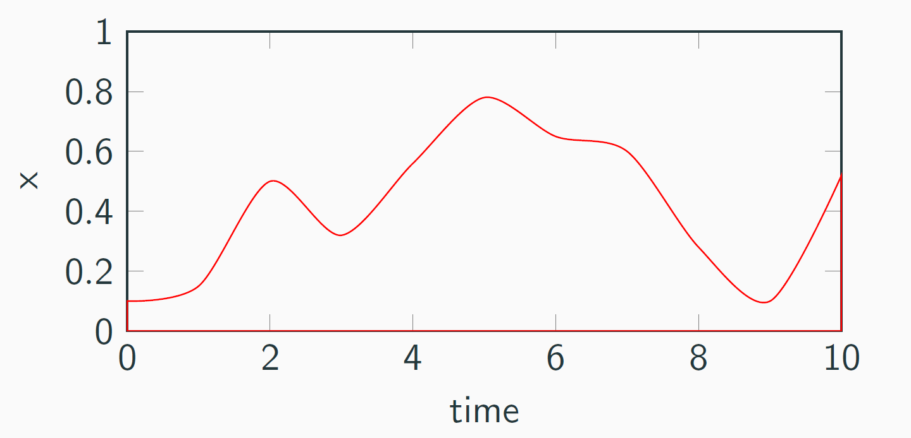
Warning
The simulation of continuous models raises many problems due to the nature of the computer: it is simply impossible to reproduce the continuity of the dynamics of a system because it evolves infinitely often while the computer simulation needs punctual computations.
Discrete time models: the time axis is discretized according to a constant period of time called time step (dt). The evolution of the system state variables is done in a discrete way, ie instantaneous, from t to t + dt.
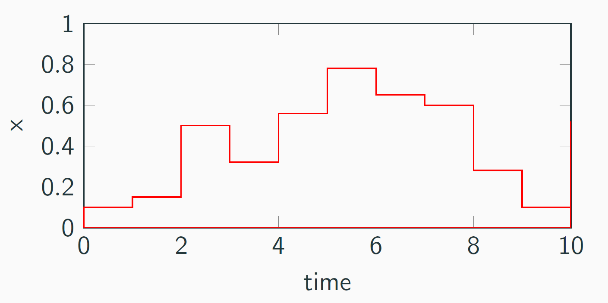
Note
The simulation of discrete models is easy. When the functions which implement the dynamics of the system are clearly defined, it is only necessary to set up an algorithm that applies these functions and then increments time.
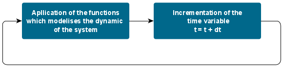Discrete event time models: the time axis is generally continuous, ie represented by a real number. However, unlike continuous models, system state variables change discretely to specific times that are called events.
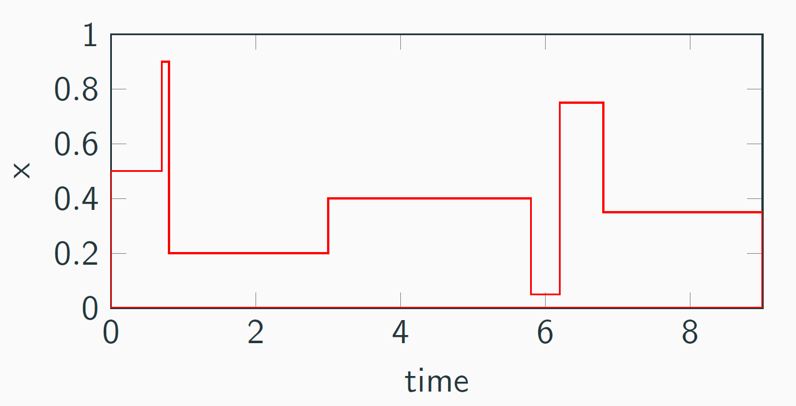
Note
There are three ways to simulate discrete event time models: (1) activity scanning, (2) interaction process and (3) event sceduling. The last one is the most common way and is described by the figure below.
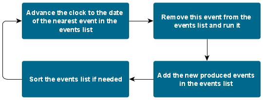f) Modeling & Simulation theory¶
Because to what it allows, computer simulation should not be only considered as a tool but as a discipline and should therefore be theorized. This is the goal of Zeigler’s Modeling and Simulation theory.
Thereby, the Modeling and Simulation theory helps to identify the different entities that constitute a simulation and study the relations that exist between these different entities. This is to give precise definitions to the different concepts that are manipulated in the field of computer simulation.
There are 6 entities clearly defined in the Modeling and Simulation theory:
The source system and its behavioral database. The source system corresponds to the environment to be modeled. It must be seen as a source of observable data that constitutes what is called the behavioral database.
The experimental scope. It is a specification of (1) the observing conditions of the system and of (2) the objectives of the simulation project.
The model. It refers to the specification of all the instructions used to generate the behavior of the system.
The simulator. It refers to any computing system capable of executing the model and generate its behavior. By separating a model from its simulator, a model can be run by different simulators which increases its portability.
The simulation relationship. It defines the notion of validity of the model. Does the modeling which is made of the system is an acceptable simplification of this one according to the qualitative criteria chosen and the objectives of the experimentation ?
The modeling relationship. It defines the notion of validity of the simulator. Does the simulator correctly generates the behavior of the model ? Does the simulator reproduces the mechanisms defined in the model (without introducing errors) ?
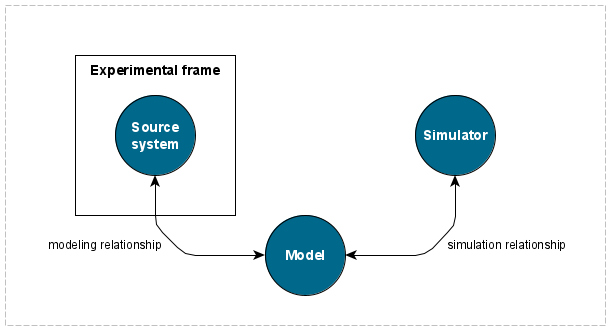
The Modeling and Simulation theory makes it possible to highlight, through the modeling and simulation relationships, important issues related to simulation such as the simplicity of the model, the behavior of the simulated model, the validation of the simulation, the reproducibility of the simulation, etc. We will discuss some of these issues in more detail later.
2. Multi-Agent Based Simulation¶
a) Difficulties of classical modeling¶
To model dynamic systems, a mathematical approach has long been used. Called Equation Based Model (EBM), it is build on an interrelation of a set of equations that captures the variability of a system over time. EBM represents the whole system and does not support an explicit representation of components (top-down). The whole system is globally represented by equations defined at the macroscopic level which does not make it possible to take into account the individual characteristics of the entities that compose the system. Moreover, this level of representation raises the question of the realism and the complexity of the parameters used to formulate the equations which model the system. So, EBM is most naturally used to model central systems.
Note
Take the example of the prey / predatory model: it is used to describe the dynamics of biological systems in which two species interact, one as a predator and the other as prey.
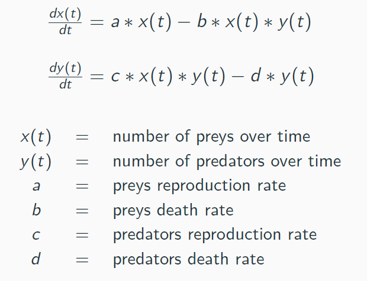It focus on the global variation of the prey and predator populations. Below, you can find the output of a prey/predator EBM simulation:
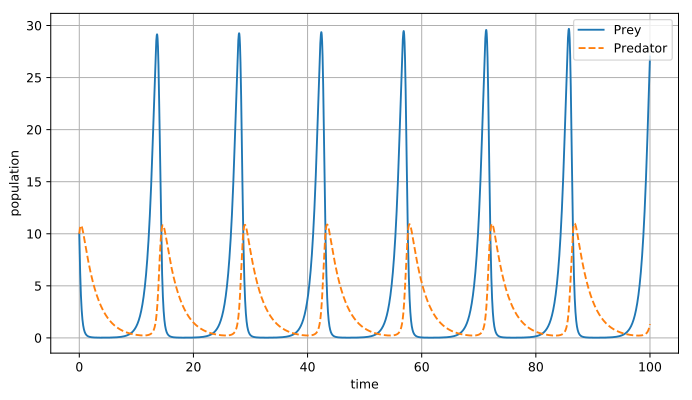Warning
Limits of the Equation Based Model (EBM):
Large number of parameters sometimes hard to understand.
Diffculty to move from macro to micro level.
Does not represent behaviors but behaviors results.
Difficulty to represent behaviors.
Does not represent interactions and organizations.
To overcome EBM limitations, it is possible to use models that focus on entities and their interactions (bottom-up) and also considers that the dynamics of the system come from the interactions between the entities.
b) An agent is a dynamic system¶
Modeling a dynamic system using agents is simple because it is obvious that an agent can be considered as a dynamic system within the meaning of systems theory. Indeed, an agent has an internal state that changes according to his perceptions (inputs) and it has behaviors to react in its environment.
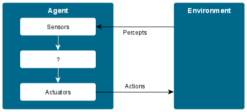As shown in the figure above, an agent is defined by a set of perceptions (inputs), a set of actions (outputs) and we speak of the internal architecture of the agent to denote the mechanisms that define its intrinsic dynamics.
c) Multi-agent modeling¶
The multi-agent approach is based on an individual-centered approach: it considers that it is possible to model not only individuals and their behaviors, but also the interactions that take place between these individuals. It considers that the overall dynamics of a system, at the macroscopic level, result directly from the interactions between the individuals who compose this system at the microscopic level. Thus, while EBM model the relationships that exist between the different identified entities of a system using mathematical equations, the multi-agent approach directly models the interactions generated by individual behaviors.
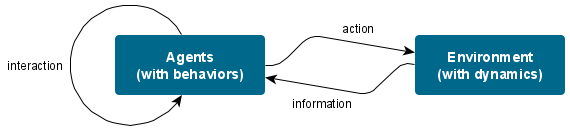To create a multi-agent simulation, you must follow the principles of the agent paradigm presented in the previous course:
Creating an artificial world made up of interacting agents (Agent-Based Models) living in an environment.
Each agent is described as an autonomous entity.
The behaviour of agents is the consequence of their observations, internal trends, beliefs and interactions with the environment and other agents.
Agents act and change the state of the environment through their actions.
Note
Take again the example of the prey / predatory model. Each entity (prey and predator) is represented by an agent and has behaviors:
Prey: move, eat, reproduce, flee and die.
Predator: move, eat, reproduce, hunt and die.
Each agent activate one of its behavior according to its perception of the environment. This simulation focus on the local behaviors of the prey and predator populations. Below, you can find the output of a prey/predator EBM simulation:
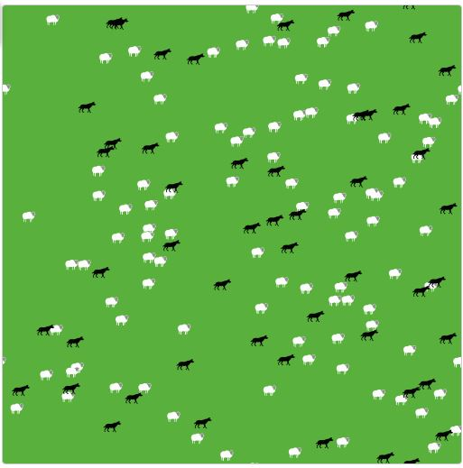Due to its ability to model the interactions between entities and the variations of a system at the micro level, Multi-Agent Based Simulation is used in many fields of application.
3. Visualizing Multi-Agent Based Simulation¶
As we have seen, simulation creates a digital environment that looks like an artificial laboratory where we can test hypotheses, prospective scenarios or simply the evolution of the system in the future.
As with any laboratory experiment, it is necessary to be able to follow the evolution of the experiments: with Multi-Agent based Simulation, it is necessary to visualize the evolution of the simulation and to collect data.
The visualization of the simulation is very important in the context of Multi-Agent based Simulation because the simple and localized rules that allow to reproduce complex and global behaviors of the system are also responsible of the emergence of many phenomena. You can learn more about the emergence capabilities of multi-agent systems at this address: https://medium.com/scalian/dynamiques-locales-cons%C3%A9quences-globales-97a2ef44ba58
In this section, we will present the two features of Mesa that make it possible to make data collection and visualization.
a) Collecting data¶
Mesa provides a class which can handle data collection and storage at runtime, which avoids to manipulates tables or dictionaries manually in the model. All this is done via the DataCollector class:
from mesa.datacollection import DataCollector
The data collector stores three categories of data: model-level variables, agent-level variables, and tables (which are a catch-all for everything else). Let’s start from the previous example: the Money Model.
Agent-level¶
First, let us consider an agent-level variable. Imagine we want to store the value of each agent’s wealth at each time step. We must add in the MoneyModel constructor a DataCollector with the parameter agent_reporters set to a dictionary that associates the label of the data and the name of the collected variable:
self.datacollector = DataCollector(agent_reporters={"Wealth": "wealth"})
We now simply tell the model to collect data with:
self.datacollector.collect(self)
each time we want to store values (e.g. right before or after we call self.schedule.step()).
Once the execution is finished, we can retrieve the data with:
model.datacollector.get_agent_vars_dataframe()
The result is a Pandas DataFrame. See the Pandas documentation for more information. You might also want to refer to the user guide for information about Pandas’ data visualization.
Question
Add this data collector to your model and visualize the health value of one or several agents.
Model-level¶
It is also possible to use functions in the collector. For example, assume we want to collect the value of the Gini Coefficient, a measure of wealth inequality, at each time step on the model. Let’s define the compute_gini method:
def compute_gini(model):
agent_wealths = [agent.wealth for agent in model.schedule.agents]
x = sorted(agent_wealths)
N = model.num_agents
B = sum( xi * (N-i) for i,xi in enumerate(x) ) / (N*sum(x))
return (1 + (1/N) - 2*B)
Now, we can collect this data at runtime using the DataCollector with the parameter model_reporters set to a dictionary that associates the label of the data and the above function:
self.datacollector = DataCollector(
model_reporters={"Gini": compute_gini},
agent_reporters={"Wealth": "wealth"})
Note that we still collect the agents’ wealth values.
Question
Visualize the evolution of the Gini Coefficient in the simulation. What do you observe ?
b) Dynamic visualization¶
So far, we’ve built a model, run it, and analyzed some output afterwards. However, one of the advantages of agent-based models is that we can often watch them run step by step, potentially spotting unexpected patterns, behaviors or bugs, or developing new intuitions, hypotheses, or insights. Other times, watching a model run can explain it to an unfamiliar audience better than static explanations. Like many ABM frameworks, Mesa allows you to create an interactive visualization of the model. In this section we’ll walk through creating a visualization using built-in components.
First, a quick explanation of how Mesa’s interactive visualization works. Visualization is done in a browser window, using JavaScript to draw the different things being visualized at each step of the model. To do this, Mesa launches a small web server, which runs the model, turns each step into a JSON object (essentially, structured plain text) and sends those steps to the browser.
A visualization is built up of a few different modules: for example, a module for drawing agents on a grid, and another one for drawing a chart of some variable. Each module has a Python part, which runs on the server and turns a model state into JSON data; and a JavaScript side, which takes that JSON data and draws it in the browser window. Mesa comes with a few modules built in, and let you add your own as well.
Grid Visualization¶
To start with, let’s have a visualization where we can watch the agents moving around the grid. For this, you will need to put your model code in a separate Python source file; for example, MoneyModel.py. Next, either in the same file or in a new one (e.g. MoneyModel_Viz.py) import the server class and the CanvasGrid class (so-called because it uses HTML5 canvas to draw a grid). If you’re in a new file, you’ll also need to import the actual model object.
from mesa.visualization.modules import CanvasGrid
from mesa.visualization.ModularVisualization import ModularServer
# If MoneyModel.py is where your code is:
# from MoneyModel import MoneyModel
CanvasGrid works by looping over every cell in a grid, and generating a portrayal for every agent it finds. A portrayal is a dictionary (which can easily be turned into a JSON object) which tells the JavaScript side how to draw it. The only thing we need to provide is a function which takes an agent, and returns a portrayal object. Here’s the simplest one: it’ll draw each agent as a red, filled circle which fills half of each cell.
def agent_portrayal(agent):
portrayal = {"Shape": "circle",
"Color": "red",
"Filled": "true",
"Layer": 0,
"r": 0.5}
return portrayal
In addition to the portrayal method, we instantiate a canvas grid with its width and height in cells, and in pixels. In this case, let’s create a 10 x 10 grid, drawn in 500 x 500 pixels.
grid = CanvasGrid(agent_portrayal, 10, 10, 500, 500)
Now we create and launch the actual server. We do this with the following arguments:
The model class we’re running and visualizing; in this case,
MoneyModel.A list of module objects to include in the visualization; here, just
[grid].The title of the model:
"Money Model".Any inputs or arguments for the model itself. In this case, 100 agents, and height and width of 10.
Once we create the server, we set the port for it to listen on (you can treat this as just a piece of the URL you’ll open in the browser). Finally, when you’re ready to run the visualization, use the server’s launch() method.
server = ModularServer(MoneyModel,
[grid],
"Money Model",
{"N":100, "width":10, "height":10})
server.port = 8521 # The default
server.launch()
The full code should now look like:
from MoneyModel import *
from mesa.visualization.modules import CanvasGrid
from mesa.visualization.ModularVisualization import ModularServer
def agent_portrayal(agent):
portrayal = {"Shape": "circle",
"Filled": "true",
"Layer": 0,
"Color": "red",
"r": 0.5}
return portrayal
grid = CanvasGrid(agent_portrayal, 10, 10, 500, 500)
server = ModularServer(MoneyModel,
[grid],
"Money Model",
{"N":100, "width":10, "height":10})
server.port = 8521 # The default
server.launch()
Now run this file; this should launch the interactive visualization server and open your web browser automatically. (If the browser doesn’t open automatically, try pointing it at http://127.0.0.1:8521 manually. If this doesn’t show you the visualization, something may have gone wrong with the server launch.)
You should see something like the figure below: the model title, a grid filled with red circles representing agents, and a set of buttons to the right for running and resetting the model.

Click
stepto advance the model by one step, and the agents will move around.Click
runand the agents will keep moving around, at the rate set by thefps(frames per second) slider at the top. Try moving it around and see how the speed of the model changes.Pressing
pausewill (as you’d expect) pause the model; pressingrunagain will restart it.Finally,
resetwill start a new instantiation of the model.
To stop the visualization server, go back to the terminal where you launched it, and press Control+c.
Changing the agents¶
In the visualization above, all we could see is the agents moving around – but not how much money they had, or anything else of interest. Let’s change it so that agents who are broke (wealth 0) are drawn in grey, smaller, and above agents who still have money.
To do this, we go back to our agent_portrayal code and add some code to change the portrayal based on the agent properties.
def agent_portrayal(agent):
portrayal = {"Shape": "circle",
"Filled": "true",
"r": 0.5}
if agent.wealth > 0:
portrayal["Color"] = "red"
portrayal["Layer"] = 0
else:
portrayal["Color"] = "grey"
portrayal["Layer"] = 1
portrayal["r"] = 0.2
return portrayal
Now launch the server again - this will open a new browser window pointed at the updated visualization. Initially it looks the same, but advance the model and smaller grey circles start to appear. Note that since the zero-wealth agents have a higher layer number, they are drawn on top of the red agents.

Adding a chart¶
Next, let’s add another element to the visualization: a chart, tracking the model’s Gini Coefficient. This is another built-in element that Mesa provides.
from mesa.visualization.modules import ChartModule
The basic chart pulls data from the model’s DataCollector, and draws it as a line graph using the Charts.js JavaScript libraries. We instantiate a chart element with a list of series for the chart to track. Each series is defined in a dictionary, and has a Label (which must match the name of a model-level variable collected by the DataCollector) and a Color name. We can also give the chart the name of the DataCollector object in the model.
Finally, we add the chart to the list of elements in the server. The elements are added to the visualization in the order they appear, so the chart will appear underneath the grid.
chart = ChartModule([{"Label": "Gini",
"Color": "Black"}],
data_collector_name='datacollector')
server = ModularServer(MoneyModel,
[grid, chart],
"Money Model",
{"N":100, "width":10, "height":10})
Launch the visualization and start a model run, and you’ll see a line chart underneath the grid. Every step of the model, the line chart updates along with the grid. Reset the model, and the chart resets too.

User settable parameter¶
The last part of the tutorial helps you to create a visualization interface in order to see the evolution of the ABM in the simulation. To allow faster modification of model parameters, it is possible to use UserSettableParameter. UserSettableParameter means that the user can modify this parameter in the web page. It takes 6 parameters (type, name, initial value, min value, max value, value per step).
Let’s start by importing the right mesa packages:
from mesa.visualization.modules import CanvasGrid, ChartModule, TextElement
from mesa.visualization.UserParam import UserSettableParameter
Then, add the following line in the definition of the ModularServer:
"density": UserSettableParameter("slider", "Agent density", 0.8, 0.1, 1.0, 0.1),
The call of the ModularServer became:
server = ModularServer(MoneyModel,
[grid, chart],
"Money Model",
{"width":10, "height":10, "density": UserSettableParameter("slider", "Agent density", 0.8, 0.1, 1.0, 0.1)})
Note: to be used in the visualization interface, the density should be define in the MoneyModel.
4. Implementing Multi-Agent Based Simulation¶
TO BE COMPLETED
5. Implementing a prey / predator simulation with Mesa¶
The objective of this practical work is to implement a simulation of a prey - predator model. The prey - predator model is a simple ecological model, consisting of three agent types: wolves, sheep, and grass. The wolves and the sheep wander around the grid at random. Wolves and sheep both expend energy moving around, and replenish it by eating. Sheep eat grass, and wolves eat sheep if they end up on the same grid cell.
If wolves and sheep have enough energy, they reproduce, creating a new wolf or sheep (in this simplified model, only one parent is needed for reproduction). The grass on each cell regrows at a constant rate. If any wolves and sheep run out of energy, they die.
- The implementation of this model will make you use several Mesa concepts and features:
MultiGrid.
Multiple agent types (wolves, sheep, grass).
Overlay arbitrary text (wolf’s energy) on agent’s shapes while drawing on CanvasGrid.
Agents inheriting a behavior (random movement) from an abstract parent
Writing a model composed of multiple files.
Dynamically adding and removing agents from the schedule.
The goal is to implement a prey - predator model closely based on the NetLogo Wolf-Sheep Predation Model: Wilensky, U. (1997). NetLogo Wolf Sheep Predation model. http://ccl.northwestern.edu/netlogo/models/WolfSheepPredation
Practice yourself!¶
Download the following archive which contains the project from which to start and extract it. The extracted folder contains 6 python files:
prey_predator/random_walker.py: this defines the RandomWalker agent, which implements the behavior of moving randomly across a grid, one cell at a time. Both the Wolf and Sheep agents will inherit from it.
prey_predator/agents.py: defines the Wolf, Sheep, and GrassPatch agent classes.
prey_predator/schedule.py: defines a custom variant on the RandomActivation scheduler, where all agents of one class are activated (in random order) before the next class goes – e.g. all the wolves go, then all the sheep, then all the grass.
prey_predator/model.py: defines the Prey-Predator model itself.
prey_predator/server.py: sets up the interactive visualization server
run.py: launches a model visualization server.
So, now it’s up to you to work and implement the prey - predator model:
Defines the Wolf, Sheep, and GrassPatch agent classes in the prey_predator/agents.py file.
A sheep that walks around, reproduces (asexually) and gets eaten.
A wolf that walks around, reproduces (asexually) and eats sheep.
A patch of grass that grows at a fixed rate and it is eaten by sheep.
Defines the Prey-Predator model by completing the prey_predator/model.py file.
Sets up the interactive visualization server by completing prey_predator/server.py file.
Display the different agents on the grid.
Added buttons to control the initial settings.
Tune the initial parameters to find a balanced state in the model: none of the species disappears during the simulation. The output graph should be like that: